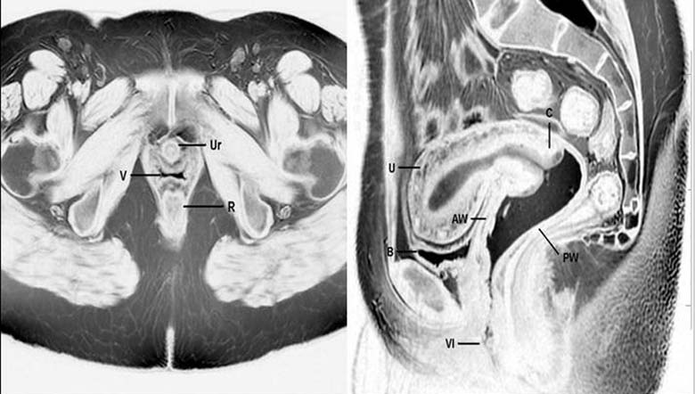

Uterine, cervical and vaginal relationships
Source-labelled T2-weighted MRI shows regional pelvic relationships in axial and sagittal views. The vagina is distended with gel to improve visibility; the pictured lumen is not its unprepared physiological configuration.

The source describes normal pelvic anatomy. This is not proof of the individual’s health or fertility. Ovaries, fallopian tubes and their uterine junctions are not depicted here. This static field does not demonstrate ovulation, physiological transport, pelvic-floor movement or the endometrial cycle.
Ferreira et al. (2015), Magnetic resonance imaging of the vagina: an overview for radiologists with emphasis on clinical decision making, Radiologia Brasileira 48:249–259, Figure 1. © Colégio Brasileiro de Radiologia e Diagnóstico por Imagem; CC BY 4.0. Whole unchanged native JPEG extracted from the publication PDF. No crop, retouch, contrast adjustment, new label or calibration. Source, preparation and extraction record · Reproduction record.
Read the observed field
- Use the axial field to compare the source-labelled vaginal, urethral and rectal regions.
- Use the sagittal field to relate the uterine and cervical regions to the gel-distended vaginal canal and surrounding structures.
- Keep this regional scan separate from ovarian and ovulation observations; no continuous zoom or patient registration is established.